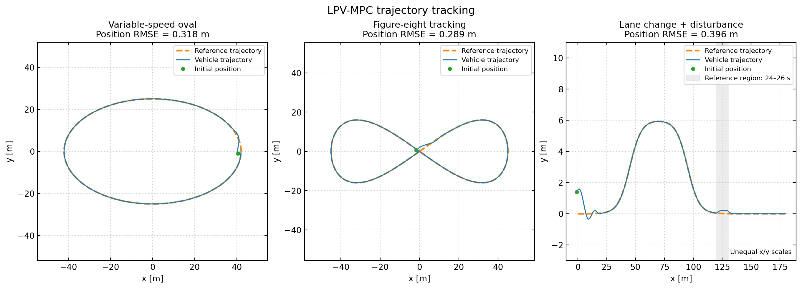
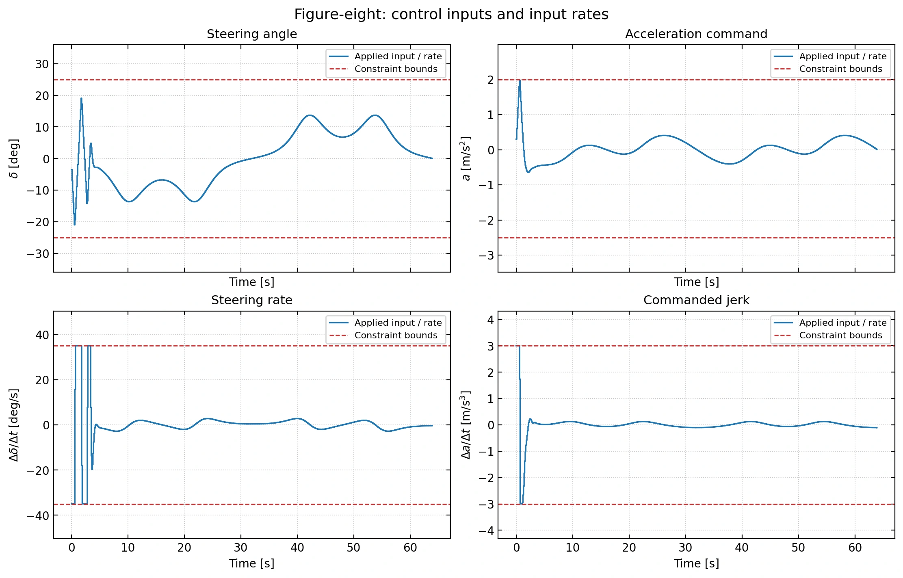

Predictive control · Custom implementation
LPV-MPC vehicle tracking
A custom Python controller that schedules its prediction model with speed and curvature, tracks three driving routes, and enforces steering, acceleration, and command-rate limits.

The problem
A tracking controller must anticipate curves while respecting how far and how quickly its actuators can move. This project develops a new linear parameter-varying model predictive control (LPV-MPC) implementation and tests its recovery from an initial offset and an unmodeled disturbance.
Engineering work
Vehicle model and tracking coordinates
Developed a four-state nonlinear kinematic bicycle simulator with position, heading, and speed. Defined along-track, cross-track, heading, and speed errors in the moving reference frame. A separate RK4 integrator propagates the simulated vehicle.
Prediction model and optimization
Derived a local error model scheduled by reference speed and curvature across a 20-step horizon. At each 100 ms update, custom Python code assembles a sparse quadratic program balancing tracking error, feedforward commands, and command changes. OSQP solves the numerical optimization.
Actuator and speed constraints
Included ±25° steering, ±35°/s steering-rate, −2.5 to +2.0 m/s² acceleration, ±3.0 m/s³ commanded-jerk, and 1–10 m/s predicted-speed bounds. Each run separately checks the commands and sampled nonlinear vehicle speed against those limits.
Custom experiments and plots
Created analytic oval, figure-eight, and lane-change routes. Every run starts with the same tracking offset; the lane-change case also receives a lateral drift and longitudinal load from 24 to 26 seconds. The plots show trajectory tracking, error recovery, and actuator constraints.
- Measure tracking error
- Schedule prediction model
- Build constrained QP
- Apply first command
- Simulate & repeat
Results & scope
All 1,520 optimization steps across the three scenarios returned a solved status, and the applied commands, command rates, and sampled speeds passed the configured limit checks within numerical tolerance. The table reports root mean square error (RMSE) over every recorded state, including startup recovery. These are results from the new custom simulation.
| Scenario | Position RMSE (m) | Cross-track RMSE (m) |
|---|---|---|
| Variable-speed oval | 0.318 | 0.250 |
| Figure-eight | 0.289 | 0.197 |
| Disturbed lane change | 0.396 | 0.271 |
Model and evaluation scope
The prediction model is a local LPV approximation around the reference trajectory. These experiments use a four-state kinematic vehicle, perfect state feedback, and a known reference; they do not model tire slip, measurement noise, or actuator lag. The 100 ms interval is a simulation setting. The new scenarios are separate from the earlier six-state reference-code study, so their errors are not a like-for-like performance comparison.
A closer look



View full-size plots
- Trajectory tracking · three scenarios ↗
- Cross-track and speed errors ↗
- Steering, acceleration, and rate limits ↗
This implementation builds on the LPV-MPC concepts studied in my earlier Mark Misin–based project. The figures show results from the new custom simulation, using OSQP for numerical optimization.